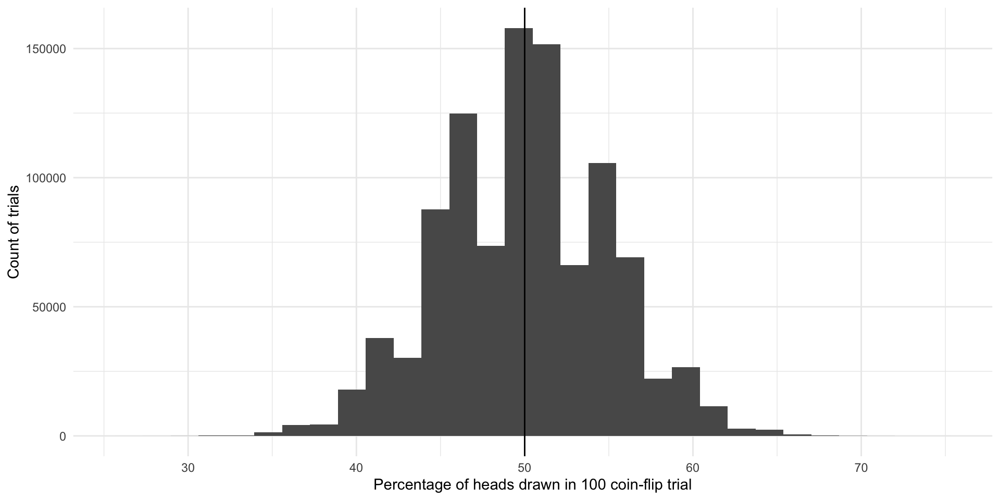
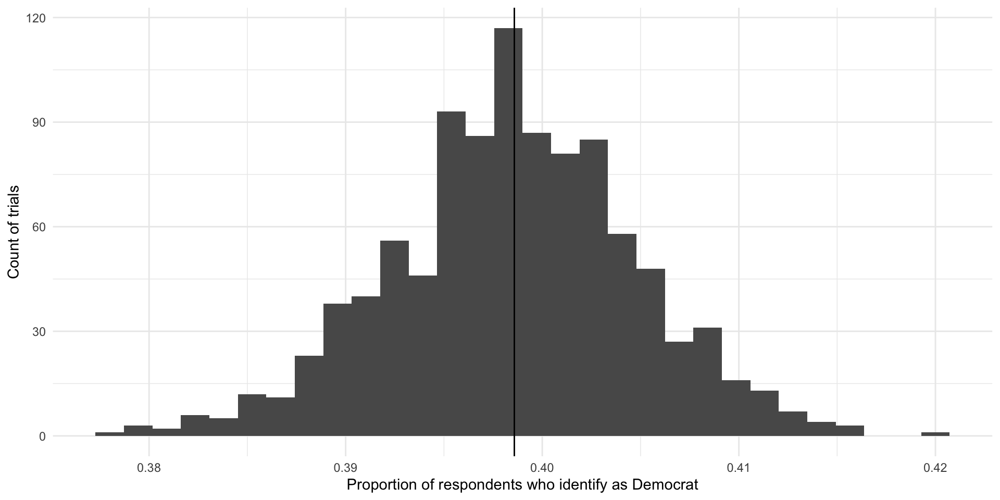

library(tidyverse)
library(janitor)
library(poliscidata)
library(ggdist)
library(MetBrewer)
library(modelsummary)
library(DescTools)
set.seed(1234)Hypothesis Testing I
Readings
Class
Pollock & Edwards, Chapter 6
Lab
Pollock & Edwards R Companion, Chapter 6
Suggested
Gelman, Hill, and Vehtari Regression and Other Stories, Chapter 4
Section
Prerequisites
Population and sample
Say we are interested in the proportion of US voters who will vote for Joe Biden in the 2024 general election. We cannot ask all US voters of their intentions. Instead, we ask a sample of the US voting population and infer from that sample the population’s intentions. When we generalize from the sample statistic to the parameter we are engaging in statistical inference.
Note
The data point of interest among the population is referred to as the parameter. Here, it is the proportion of US voters who intend to vote for Joe Biden in the 2024 general election. We do not know this.
The data point of interest among the sample is referred to as the statistic. Here, it is the proportion of survey respondents who intend to vote for Joe Biden in the 2024 general election. We do know this.
We aim to have a statistic that accurately represents the parameter.
We want to know how many people intend to vote for Joe Biden. In other words, we want to know whether our survey results reflect the true proportion of the population who intend to vote for him. How can we be confident that our statistic represents the parameter?
Generally speaking, the more our sample “looks like” our population, the more confident we can be that we have a good statistic. Drawing on probability theory, our sample is increasingly likely to resemble our population with its randomness and size.
You should strive for a large pure random sample. In a pure random sample, every individual within your population is equally likely to be drawn. This is really hard to achieve! Think about normal election surveys. Many are conducted over the phone. There are plenty of people who do not have a landline phone, or do not pick up calls from unknown numbers, or who keep their phones on do not disturb during the day. These people will be harder to contact than those who are sitting by the phone waiting eagerly for a call. Even if you have access to all US voters’ phone numbers (never mind that some voters do not have phone numbers) and you take a random sample of those phone numbers and start calling, you still will not get a hold of them all with equal probability.
You should also strive for as large a sample as you can possibly get. More is always better in terms of statistical inference (if not your research budget or time). Remember back to our coin flips last week. The more coin flips we did, the closer we got to the true probability distribution between heads and tails. This principle also holds here.
Sampling error
Imagine you have a large and representative sample. You are still going to have some error. This is because your sample varies in all the normal ways events with uncertainty vary. To illustrate, let’s return to our coin flips.
We state our possible outcomes:
possible_outcomes <- c("HEADS", "TAILS")
possible_outcomes[1] "HEADS" "TAILS"We flip our coin 100 times:
coin_flip_100 <- sample(possible_outcomes, 100, replace = T, prob = c(0.5, 0.5))
coin_flip_100 [1] "TAILS" "HEADS" "HEADS" "HEADS" "HEADS" "HEADS" "TAILS" "TAILS" "HEADS"
[10] "HEADS" "HEADS" "HEADS" "TAILS" "HEADS" "TAILS" "HEADS" "TAILS" "TAILS"
[19] "TAILS" "TAILS" "TAILS" "TAILS" "TAILS" "TAILS" "TAILS" "HEADS" "HEADS"
[28] "HEADS" "HEADS" "TAILS" "TAILS" "TAILS" "TAILS" "HEADS" "TAILS" "HEADS"
[37] "TAILS" "TAILS" "HEADS" "HEADS" "HEADS" "HEADS" "TAILS" "HEADS" "TAILS"
[46] "HEADS" "HEADS" "TAILS" "TAILS" "HEADS" "TAILS" "TAILS" "HEADS" "HEADS"
[55] "TAILS" "HEADS" "TAILS" "HEADS" "TAILS" "HEADS" "HEADS" "TAILS" "TAILS"
[64] "TAILS" "TAILS" "HEADS" "TAILS" "HEADS" "TAILS" "HEADS" "TAILS" "HEADS"
[73] "TAILS" "HEADS" "TAILS" "HEADS" "TAILS" "TAILS" "TAILS" "HEADS" "HEADS"
[82] "TAILS" "TAILS" "HEADS" "TAILS" "HEADS" "TAILS" "TAILS" "TAILS" "HEADS"
[91] "TAILS" "HEADS" "TAILS" "TAILS" "TAILS" "HEADS" "TAILS" "TAILS" "TAILS"
[100] "HEADS"We know that the true probability of the fair coin landing on heads is 0.5. Therefore, if we flip a fair coin 100 times, we should get 50 heads. However, we also know from last week that these random draws are a bit noisy: we can get proportions that do not reflect the underlying probability of 0.5. What did we get in this draw?
table(coin_flip_100)coin_flip_100
HEADS TAILS
45 55 The more flips we do, the closer we will get to that true probability distribution. To demonstrate, let’s do 1,000,000 100-coin flip trials and record the number of heads we get each time:
coin_flip <- function(possible_outcomes, n) {
outcomes <- sample(possible_outcomes, size = n, replace = T, prob = c(0.5, 0.5))
return(table(outcomes)["HEADS"])
}
results <- tibble(trial = 1:1e6) |>
rowwise() |>
mutate(n_heads = coin_flip(possible_outcomes, 100))
results# A tibble: 1,000,000 × 2
# Rowwise:
trial n_heads
<int> <int>
1 1 52
2 2 52
3 3 48
4 4 60
5 5 61
6 6 49
7 7 52
8 8 50
9 9 49
10 10 45
# ℹ 999,990 more rowsWhat are the results of these repeated trials?
ggplot(results, aes(x = n_heads)) +
geom_histogram() +
geom_vline(xintercept = 50) +
theme_minimal() +
labs(x = "Percentage of heads drawn in 100 coin-flip trial",
y = "Count of trials")
The most common outcome of these 1,000,000 100-coin-flip trials is our true underlying proportion: \(Pr(H, T) = \{0.5, 0.5\}\). The next most common outcomes are very close to that true underlying proportion. If I were to select a trial at random from those 1,000,000 we just conducted, I am most likely to get one that resulted in 50% heads or very close to 50% heads. This is because there are many more trials that resulted in and around 50% heads than did not.
We do get some trials in which we draw many more or far fewer than our expected 50 heads. We have some as low as 26 heads and some as large as 74 heads. But again, the number of heads recorded in most of our trials are clustered around our expected 50. The average number of heads drawn in all of our trials is 49.991061 heads which is really, really close to our known parameter of 0.5 or 50%. Yay!
So, even with representative and large samples you will get some error. That’s okay. As long as the mean of the sampling distribution of an infinite number of identical trials would equal the true population parameter, we have an unbiased statistic that we can use to infer things about our population of interest. Here, each of the outcomes of our trials - including those ones that resulted in 26 heads and 74 heads - are unbiased statistics because the mean of infinite identical trials would be 50 heads.
Sampling distributions
Let’s move on from coin flips. Suppose that we want to know how many Americans identify as Democrats. We will return to the American National Election Survey to answer this question.
This survey asks respondents whether they identify as a Democrat (this binary variable takes on 0 if not and 1 if they do). Let’s look at these data for our first five survey respondents:
nes |>
select(caseid, dem) |>
head(5) caseid dem
1 408 0
2 3282 1
3 1942 0
4 118 1
5 5533 0Let’s very cheekily pretend that this is a complete survey of the entire voting population of America. That way, we can pretend that we know the true proportion of US voters (our population of interest) who identify as Democrats (our parameter).
What is that proportion?
tabyl(nes, dem) dem n percent valid_percent
0 3534 0.597363083 0.5997963
1 2358 0.398580122 0.4002037
NA 24 0.004056795 NAOkay, so let’s pretend that 40% of all US voters identify as Democrats.
We can’t survey all voters, so instead we take a representative and large simple random sample from this population:
nes_sample <- nes |>
select(caseid, dem) |>
slice_sample(n = 3000)We have taken a random sample of 3,000 individuals (or 51% of our population of 5,916 voters). Every voter (member of our population) had an equal probability of being picked for this sample.
What proportion of this sample identify as Democrats?
tabyl(nes_sample, dem) dem n percent valid_percent
0 1793 0.597666667 0.6002678
1 1194 0.398000000 0.3997322
NA 13 0.004333333 NA39.80%. Nice! But what if we took a different sample of 3,000?
nes_sample_2 <- nes |>
select(caseid, dem) |>
slice_sample(n = 3000)
tabyl(nes_sample_2, dem) dem n percent valid_percent
0 1764 0.588 0.5903614
1 1224 0.408 0.4096386
NA 12 0.004 NAWe get a different answer: 40.80%. Of course! This is just like our different coin flip trials from last week and above. Each resulted in a different number of heads. The more flips we did, the closer we got to the true underlying probability distribution.
Let’s take 1,000 different samples of 3,000 US voters and see what we get:
dem_survey <- function(df, n) {
slice_sample(df, n = n) |>
tabyl(dem) |>
filter(dem == 1) |>
pull(percent)
}
nes_samples_1000 <- tibble(survey = 1:1000) |>
rowwise() |>
mutate(prop_dem = dem_survey(select(nes, caseid, dem), 3000)) |>
ungroup()
nes_samples_1000# A tibble: 1,000 × 2
survey prop_dem
<int> <dbl>
1 1 0.399
2 2 0.399
3 3 0.397
4 4 0.396
5 5 0.395
6 6 0.39
7 7 0.403
8 8 0.396
9 9 0.401
10 10 0.397
# ℹ 990 more rowsggplot(nes_samples_1000, aes(x = prop_dem)) +
geom_histogram() +
geom_vline(xintercept = tabyl(nes, dem) |> filter(dem == 1) |> pull(percent),
colour = "lightblue",
linewidth = 2) +
geom_vline(xintercept = mean(nes_samples_1000$prop_dem),
colour = "pink",
linewidth = 2) +
theme_minimal() +
labs(x = "Proportion of respondents who identify as Democrats",
y = "Count of trials")On average, 39.85% of US voters in our 1,000 samples of 3,000 US voters identified as Democrats. This is shown by the pink line in the graph above. Our (cheeky) population proportion is 39.86% (shown by the blue line in the graph above). Yay! These are very, very close to each other and we only did 1,000 samples. If took more and more samples, the average proportion of respondents who identify as Democrats in those trials would get increasingly close to our population’s proportion of Democrats. In fact, theoretically, if we took an infinite number of samples from these 5,916 observations, the average of the proportion of individuals who identify as Democrats in each of those infinite samples would equal exactly the population’s proportion: 39.86%. Further, we know that the proportions found in each of those trials would be normally distributed around that mean, with the most common outcomes sitting at or very close to the mean.
As long as our sample of our population is large and randomly drawn, we know enough about its shape and central point to use it to infer what is going on in the population. When your sample is large and representative (see randomly drawn), your sampling distribution will be near normally distributed. The center will be at (or very, very close to) the population mean. This is called the Central Limit Theorem. This theorem suggests that statistics (including means, proportions, counts) from large and randomly drawn samples are very good approximations of the underlying (and often unobservable) population parameter.
Inferring from a single “trial”
In a lot of (social) science research it is not practical or, in some cases, possible to do many trials. For example, a lot of us study the onset, conduct, and termination of wars. Unlike a game of chess, you cannot reset and run a war many times in order to get your sampling distribution of your variable of interest.
Further, we often do not know the shape or size of our population. For example, the best guess we have of the demographics of the US population comes from the census. But this misses a lot of people. For example, if you want to study houselessness, you might need to rely on surveys of samples of people that may or may not be representative of this difficult to reach population of people.
A lot of the time; therefore, you will have one data point: one mean, one proportion, one count. To use this one data point to infer something about our population of interest, we need to use some of lessons that we learned from above and make some pretty important assumptions.
Let’s return to our survey work above. We took 1,000 different samples of 3,000 US voters. We asked each of those US voters whether they identified as Democrats. We then found the proportion of the 3,000 respondents who identified as Democrats in each of our 1,000 different samples. We then took the average of those 1,000 different proportions and compared it to our population average. In line with the Central Limit Theorem, we found that the average of our sample statistics was very, very close to our population parameter.
Okay, now imagine that you could only run one of those trials. Let’s select one at random:
nes_single <- slice_sample(nes_samples_1000)
nes_single# A tibble: 1 × 2
survey prop_dem
<int> <dbl>
1 703 0.384How close is this single sample statistic to the population parameter of 39.86%? Pretty close! In fact, as discussed above, you are more likely to get a sample statistic close to the population parameter than not.
Remember, when we ran multiple trials we got many sample statistics that were clustered around the population mean.
ggplot(nes_samples_1000, aes(x = prop_dem)) +
geom_histogram() +
geom_vline(xintercept = tabyl(nes, dem) |> filter(dem == 1) |> pull(percent)) +
theme_minimal() +
labs(x = "Proportion of respondents who identify as Democrat",
y = "Count of trials")
So, if you were to pick one of these trials at random, you are more likely to pick one with a sample statistic that is close to the population parameter than not. Convenient!
How confident can we be in our statistic?
That being said, we could get unlucky and have drawn a large and representative sample that sits at one of those extreme values. How confident can we be that our single sample statistic is close to the population parameter?
Remember back to our week on descriptive statistics. There are some super handy properties of normal distributions on which we will draw.
norm_5_2 <- tibble(x = rnorm(n = 1e6, mean = 5, sd = 2))
ggplot(norm_5_2, aes(x = x)) +
stat_slab(
aes(fill_ramp = after_stat(cut_cdf_qi(cdf))), fill = met.brewer("Egypt")[2]
) +
scale_fill_ramp_discrete(range = c(1, 0.2), guide = "none") +
theme_minimal()For normally distributed data:
Approximately 68% of the data fall within one standard deviation of the mean (the dark blue).
Approximately 95% of the data fall within two standard deviations of the mean (the medium blue).
Approximately 99.7% of the data fall within three standard deviations of the mean (the light blue).
So, if we assume that the statistic we get from our large and representative sample is our “best guess” at the population parameter, we can center our theoretical sampling distribution around this point. We know that these data are normally distributed. We can use what we know about normal distributions to identify the boundaries around which we are confident some proportion of all statistics from an infinite number of identically drawn samples would fall.
Let’s make this more concrete by going back to a single random sample of 3,000 respondents from the NES survey. Let’s draw that sample:
nes_sample <- sample_n(nes, 3000) |>
select(caseid, dem)
head(nes_sample) caseid dem
1 5144 0
2 3483 1
3 4773 0
4 4340 0
5 6385 0
6 288 0In this sample, 39.77% of respondents identify as Democrats. This is our best guess at our parameter of interest: the proportion of US voters who identify as Democrats.
Using what we know from above, what would our distribution of proportions look like if this was not the (average) proportion drawn from one trial but instead it was the average proportion drawn from an infinite number of identical trials? Well, those proportions would be normally distributed around that center point. To fill in that blank, we need one additional piece of information: the standard deviation (or spread) of those points around that center point.
Note
When we are looking at the standard deviation of the sampling distribution, we refer to it as the standard error.
The formula for working out the standard error of a proportion (such as the proportion of a population who identify as Democrats) is:
\[ se(\hat{p}) = \sqrt{\frac{\hat{p}(1-\hat{p})}{n}} \]
Where \(\hat{p}\) is the sample proportion (here: 0.398).
p_hat <- tabyl(nes_sample, dem) |>
filter(dem == 1) |>
pull(percent)
n <- 3000
se <- sqrt((p_hat * (1 - p_hat)) / n)
se[1] 0.00893547Now, let’s use this information to draw many different hypothetical proportions of respondents who identify as Democrats in many different hypothetical samples.
ggplot(tibble(x = rnorm(1e6, mean = p_hat, sd = se)), aes(x = x)) +
stat_halfeye(.width = c(0.95, 0.68)) +
theme_minimal() +
labs(x = "Proportion of respondents who identify as Democrats",
caption = "Median and mean shown with point. One and two standard deviations are shown by the black bars.")So, if our sample is large and random and we were to draw it many different times (here, 1,000,000 times), we would get a sampling distribution of proportions that resembles the one presented above. This variation is due to random error. There is nothing wrong with our research design or sampling method.
We can use what we know about normal distributions to say that approximately 68% of these hypothetical proportions of people who identify as Democrats fall within one standard deviation of the mean, or:
lower_68 <- p_hat - 1 * se
lower_68[1] 0.3887312upper_68 <- p_hat + 1 * se
upper_68[1] 0.4066021These boundaries are marked by the thick black line on the graph above.
Also, approximately 95% of these hypothetical proportions of people who identify as Democrats fall within 1.96 standard deviations of the mean, or:
lower_95 <- p_hat - 1.96 * se
lower_95[1] 0.3801531upper_95 <- p_hat + 1.96 * se
upper_95[1] 0.4151802These boundaries are marked by the thinner black line on the graph above.
We are putting a lot of stead in our single sample. That’s okay as long as your sample is large and representative. Over these past few weeks we have discussed in sometimes painful detail why we can make some of the assumptions on which we rely. But, at the end of the day, you are the expert. You have explored your data with a critical eye. You have read everything you possibly can about this topic. You might have even gone out in the field and gotten your hands dirty. The more you know about your subject matter, the better you will be able to detect whether something strange is going on with your sample and your findings. This is so important. The strength of your empirical analysis is built on these foundations.
Choosing your sample size
We know that our confidence around our point estimate increases with the number of observations. Formally:
\[ se(\hat{p}) = \sqrt{\frac{\hat{p}(1-\hat{p})}{n}} \]
So, as you increase that \(n\), you decrease your standard error and you narrow the interval over which you have a given level of confidence.
I have said before that more is always better. Technically, this is very, very true. But those marginal returns diminish. And those survey costs stack up.
To illustrate, let’s look at how much your standard error decreases as you increase your sample size.
se_from_sample <- function(n_samples) {
nes |>
slice_sample(n = n_samples) |>
pull(dem) |>
MeanSE(na.rm = T)
}
tibble(sample_size = seq(from = 100, to = 3000, by = 100)) |>
rowwise() |>
mutate(se = se_from_sample(sample_size)) |>
ggplot(aes(x = sample_size, y = se)) +
geom_line() +
theme_minimal() +
labs(x = "Number of observations in the sample",
y = "Standard error")Moving from 100 to 1,000 observations in your sample dramatically decreases your standard error. Moving the same distance from 1,000 to 1,900 makes a far smaller difference to your error.
Hypthesis testing
Generally speaking, we want to make some statement about what is going on in the world. For example, does trade dependence between states reduce the likelihood that those states will go to war with one another? Does election day voter registration increase the number of people who vote in elections in the US? Does party identification shape your views on abortion?
We can answer these questions by proposing and testing hypotheses, or measurable and observable statements about a population. For example, state dyads with high levels of trade dependence go to war with each other less frequently than state dyads with low levels of trade dependence. Election day voter registration increases the number of people who vote in an election.
We can use statistical tests of our data to test these hypotheses. Do we see support for our hypothesis in our data? How confident can we be that the differences identified in the data are meaningful and not just the product of random error?
Frequentist statistics provides us with a means of answering that latter question. It asks you to imagine a world in which your hypothesis is wrong: there is no effect of trade dependence on the prevalence of war, or no effect of election-day registration on the number of people who vote.
To build our intuition for this approach, let’s consider a simple question: do more than zero Democrats support access to abortions with no conditions.
Note
More interesting hypotheses are often framed as difference-of-means or difference-of-proportions tests. We will get to those next week.
To test this hypothesis, you you go out and you get a large, random sample from your population. Happily, we have access to the NES, which asked asked 5,916 US adults with which party they identified and the conditions under which they think abortions should be allowed. Here are the first five respondents’ answers:
nes |>
select(caseid, pid_3, abort4) |>
head(5) caseid pid_3 abort4
1 408 Ind Always
2 3282 Dem More conds
3 1942 Ind More conds
4 118 Dem Always
5 5533 Ind AlwaysWe are going to test the hypothesis that more than zero Democrats said that they support access to abortions with no conditions. Let’s start by working out what proportion of Democrats in our survey support that statement:
nes_sample <- nes |>
mutate(abortion_always = if_else(abort4 == "Always", 1, 0)) |>
filter(dem == 1)
tabyl(nes_sample, abortion_always) abortion_always n percent valid_percent
0 1018 0.431721798 0.4344857
1 1325 0.561916879 0.5655143
NA 15 0.006361323 NAOur sample found that 56% of Democrats think abortions should always be allowed. It looks like we have found support for our hypothesis. But what if this is just random noise? How can we be confident that this represents the true number of Democrats in the population who support unconditional access to abortions?
Assuming that our sample is large and representative of the population, we can build out the hypothetical distribution of the proportion of Democrats who state their support for access to abortions without conditions in many hypothetical identically drawn samples of our population:
se <- sqrt((prop_dems_always * (1 - prop_dems_always)) / nrow(nes_sample))
ggplot(tibble(x = rnorm(1e6, mean = prop_dems_always, sd = se)), aes(x = x)) +
stat_halfeye(.width = c(0.95, 0.68)) +
theme_minimal() +
labs(x = "Proportion of Democrats who always support access to abortion",
caption = "Median and mean shown with point. One and two standard deviations are shown by the black bars.")
But how can we be sure that this difference is not just random error or noise? Let’s return to our statistical test. Imagine a world in which you are wrong: zero percent of Democrats support unconditional access to abortions. If this null hypothesis is true, how likely would we be take a large and random sample of our population and find that 56% of democrats within that population support unconditional access to abortions?
Let’s add this null world to our findings:
ggplot(tibble(x = rnorm(1e6, mean = prop_dems_always, sd = se)), aes(x = x)) +
stat_halfeye(.width = c(0.95, 0.68)) +
geom_vline(xintercept = 0) +
theme_minimal() +
labs(x = "Proportion of Democrats who always support access to abortion",
caption = "Median and mean shown with point. One and two standard deviations are shown by the black bars.")The null hypothesis of no effect (or zero Democrats) is shown by the vertical line at 0. It is highly unlikely that would we take a large and random sample of our population and find that 56% of democrats within that population support unconditional access to abortions if our null hypothesis was, in fact, true.